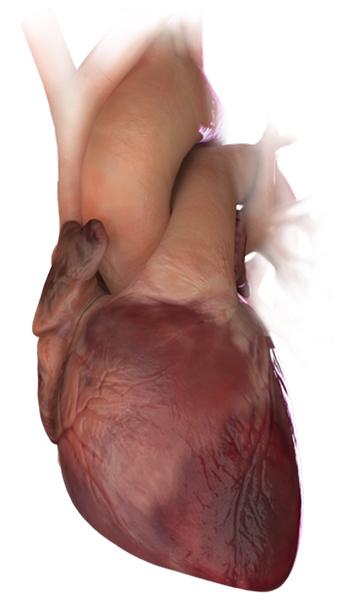

Every Minute Matters
Roche’s 9-minute assay can help improve patient
satisfaction & disposition.
In the next 39 seconds, cardiovascular disease will claim another life in the U.S.15
- For cardiac patients, every second counts.16
When it comes to cardiac care, Roche Diagnostics Understands… It’s all about fast, accurate test results.
Isn’t your ED attempting to triage patients as efficiently as possible?
Roche’s 9-minute assay can help improve patient satisfaction & disposition.